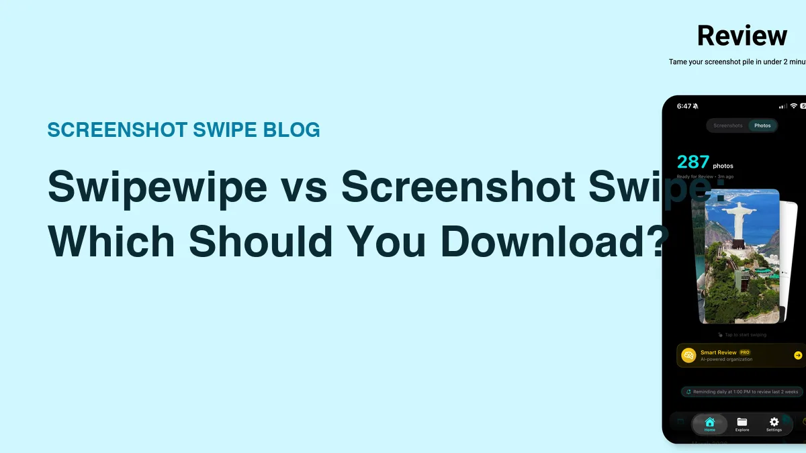
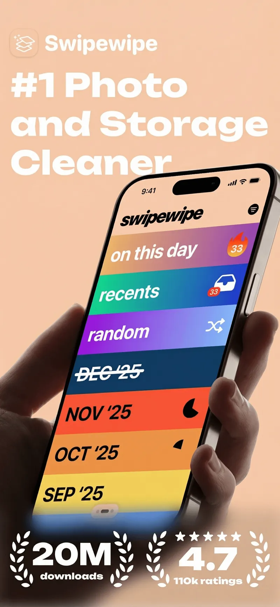

Swipewipe vs Screenshot Swipe: Which Should You Download? (2026)

Quick answer: Swipewipe is the better choice for cleaning your entire camera roll — monthly decks and streaks make a huge backlog finishable. Screenshot Swipe is the better choice for screenshots specifically, adding on-device OCR search, notes, tags, and reminders to everything you keep instead of only deleting.
Both apps put a swipe gesture on top of your photo library. Right keeps, left deletes. If you watched someone use either one for ten seconds, you'd call them the same app.
They're built for different problems, and picking the wrong one wastes your money on features you won't use. Full disclosure up front: I make Screenshot Swipe. Swipewipe has 82,000 ratings and mine has five, so this comparison stays specific about what each app actually does.
Ratings below were pulled from the iTunes API on July 18, 2026.
What is Swipewipe best at?

Swipewipe's monthly decks: clear September, get a streak, come back for October.
Platform: iOS App Store · swipewipe.app · Rating: 4.7 ★ (82,247 ratings)
Finishing. That's the honest answer. A camera roll with 15,000 photos across six years is psychologically unfinishable as one pile, and Swipewipe's core insight is to never show you the pile. You clear "March '23" in a sitting, the app celebrates, a streak builds, and the backlog shrinks month by month.
It treats every photo the same — a sunset, a selfie, a screenshot of a Wi-Fi password all get the same keep-or-delete choice. For photos, that's exactly right. The free tier caps daily swipes; a subscription removes the cap.
What is Screenshot Swipe best at?

The keep side: every saved screenshot gets a note, tags, and OCR so you can find it again.
Platform: iOS App Store · screenshotswipe.com · Rating: 5.0 ★ (5 ratings)
The keep side. Screenshots are saved information — you kept that screenshot because of what it says. So keeping one in Screenshot Swipe attaches the context: an optional note, tags (AI can suggest both), a reminder if it needs action. Every kept screenshot gets on-device OCR, which means you can full-text search your entire collection later.
The delete side works like you'd expect — swipe left to queue for batch deletion, with undo. The scope is deliberately narrow: screenshots only. It does nothing for your 14,000 regular photos, and the AI Smart Review that pre-sorts your pile is a Pro purchase.
How do they compare feature by feature?
| Feature | Swipewipe | Screenshot Swipe |
|---|---|---|
| Scope | Whole camera roll | Screenshots only |
| Swipe to keep/delete | Yes | Yes |
| Monthly decks + streaks | Yes | No — date-range review |
| OCR text search | No | Yes, on-device |
| Notes on kept items | No | Yes |
| Tags + album sync | No | Yes |
| Reminders on screenshots | No | Yes |
| AI assist | No | Smart Review (Pro) |
| Free tier | Daily swipe limit | Full triage + OCR search |
| Rating (Jul 2026) | 4.7 ★ (82k) | 5.0 ★ (5) |
Which one should you pick?
Answer one question: when you look for an old screenshot, do you search for it or scroll for it?
If you never look for old screenshots — you just want the clutter gone and your storage back — Swipewipe's whole-library approach covers more ground, and its maturity shows in a thousand small polish details. It's the safer default for a general photo mess.
If your screenshots are a filing system that never got filed — receipts, confirmation codes, recommendations, work notes — deletion alone doesn't fix that. Searchability does. That's the case Screenshot Swipe is built for, and the free tier includes the OCR search.
You can also run both. They don't conflict — both delete through Apple's photo library. Swipewipe for the historical photo backlog, Screenshot Swipe as the weekly screenshot habit.
Frequently asked questions
Is Swipewipe or Screenshot Swipe better?
Swipewipe for cleaning a whole camera roll — the monthly decks make a multi-year backlog finishable. Screenshot Swipe for screenshots specifically, because it adds OCR search, notes, tags, and reminders to everything you keep.
Is Swipewipe free?
Free to download with a daily swipe limit; unlimited swiping needs a premium subscription. Screenshot Swipe's triage, notes, tags, and OCR search are free, with a Pro purchase for AI Smart Review.
Can you use both apps together?
Yes, and it's a sensible split. Both delete through Apple's photo library, so nothing conflicts. Use Swipewipe on the big photo backlog and Screenshot Swipe as the ongoing screenshot habit.
Do deleted photos go to Recently Deleted?
Yes, from both apps. Anything deleted sits in Photos → Albums → Recently Deleted for up to 30 days and can be recovered there.
The 30-second decision
- Open Photos → Albums → Media Types. Compare your Screenshots count against your total library.
- Mostly photos? Get Swipewipe and clear one month tonight.
- Mostly screenshots — or screenshots you keep needing later? Get Screenshot Swipe and clear this week's pile.
- Both problems? Both apps. They coexist fine.
Try a review with your own screenshots.
Screenshot Swipe is free to start. Keep useful captures with notes, tags, and reminders. Start with the free manual review features.
Download on theApp Store